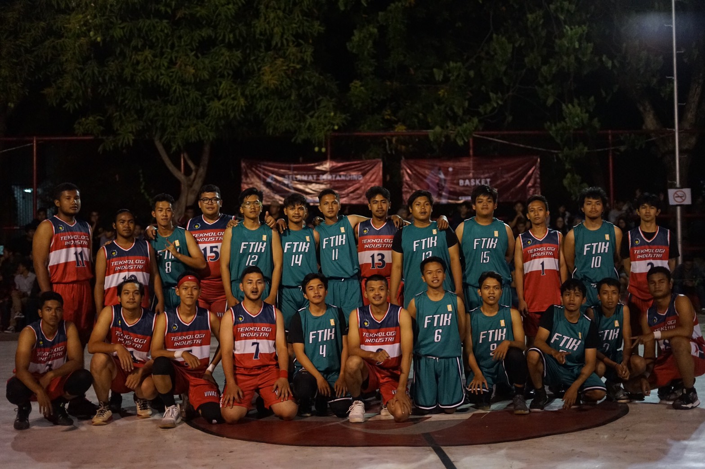

Tentang Aku
Tak kenal maka tak sayang xixixi

Haloo semuaa.. Aku Anugrah Cahya Kautsar. Aku biasa dipanggil Anung oleh keluargaku, tapi teman - temanku lebih sering memanggil ku Nugrah. Aku seorang mahasiswa di salah satu institut di Surabaya. Walaupun kuliah di Surabaya sebenarnya aku asli Tegal looo.. Aku SD sampai SMP di Tegal sebelum akhirnya pindah ke Bandung karena ikut pindah kerja orangtua. Di Bandung aku sekolah di SMP Negeri 2 Bandung dan setelah lulus melanjutkan SMA di SMA Negeri 5 Bandung. Setelah menempuh 3 tahun proses pembelajaran di SMA akhirnya aku lulus dan alhamdulillah bisa lanjut kuliah di Institut Teknologi Sepuluh Nopember di jurusan yang aku pengen yaitu Sistem Informasi.
Kumpulan Tugas
Ini adalah kumpulan tugas yang aku bikin pake visualcode
Kompetisi Olahraga Dies Natalis ITS 59
September 2019, Surabaya
September 2019. mungkin ini salah satu momen yang paling berkesan selama perjalanan kuliah. Aku yang baru beberapa bulan kuliah di ITS bisa tergabung dalam tim inti basket fakultas. Foto diatas itu kompetisi basket pertama ku saat menjadi mahasiswa hehehe.. Tentunya berbeda dari kompetisi sebelumnya saat di sma dan apalagi ini merupakan kompetisi diesnatali. Penonton yang sangat banyak dan teman - teman baru menjadi tantang tersendiri buat aku untuk terus bermain semaksimal mungkin selama menit berlangsung. Walaupun kami kalah, tapi menurutku ini merupakan game yang seru karena lawannya adalah juara diesnat tahun lalu. Coba tebak aku yang mana xixixix
Sinergi Batch VII
Oktober 2019, Surabaya

Ini nih, momen yang tak terlupakan lainnya. SINERGI. Buat kalian yang belum tau sinergi itu apa, jadi sinergi itu kependekan dari sistem informasi mengabdi untuk negeri. Ini tuh salah satu proker dari departemen sosdev di himpunan sistem informasi. Acaranya seru puolll.. jadi kita ngajarin anak - anak jalanan di salah satu taman di Surabaya. Aku dan kelompok ku kebagian ngajarin bahasa inggris niih gaes hehehe.. Ngga cuman belajar aja tapi kita juga seru- seruan bareng sama mereka. Kebanyakan anak jalanan itu usianya sekitar SD kelas 3 sampe 5 gitu. Jadi kebayangkan chaosnnya kaya apa.. Ada yang lari - larian, ada yang minta dibeliin jajan dan masih banyak lagi deh pokoknya HAHAHAH. Walaupun cape tapi bener - bener seru bangetttt..